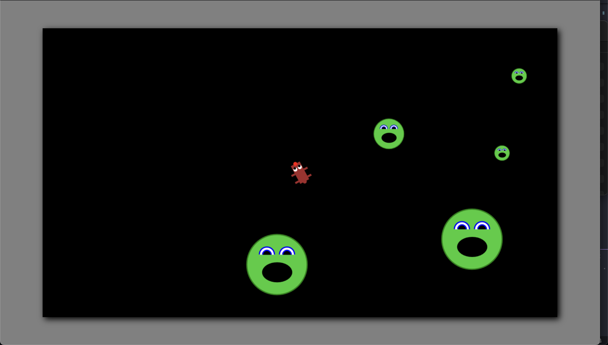

Enemy Enhancement
The game is now playable, but very short, and pretty boring. In this section, we'll generate more enemies when the player has cleared the level, and we'll make each enemy more interesting by splitting them into smaller enemies and randomizing their toughness.
Let's handle spawning more enemies first. To do this, we'll need to know when the last enemy has been destroyed.
// Game.ts
private loop = (ms: number): void => {
// ...
if (!this.enemies.length) {
this.spawnEnemies();
this.projectiles = [];
this.player.pos = new Vec2(
this.ctx.canvas.width / 2,
this.ctx.canvas.height / 2
);
this.player.vel = new Vec2(0, 0);
}
}
At the end of each animation frame, we'll check the length of our
enemies array. If it's zero, we
know that we've destroyed the last enemy. We'll spawn new enemies, get
rid of any remaining projectiles, and reset the player position and
velocity. This is the second place we've performed an identical player
reset, so we'll break it out into a separate function and replace the
duplicated code.
private resetPlayer() {
this.player.pos = new Vec2(
this.ctx.canvas.width / 2,
this.ctx.canvas.height / 2
);
this.player.vel = new Vec2(0, 0);
}
Let's see what this change does for us.
We're getting somewhere. Let's handle enemy splitting next. We'll
handle this by assigning each enemy a
stage and
scale property. The stage will
let us know whether to split an enemy or destroy it, and the scale
will tell us how what size to draw the enemy. We'll also need to add a
position to the enemy constructor. Right now they all spawn in at
position (0, 0), but when we split the enemy, we'll want to spawn two
new enemies at the old enemy's position, not in the corner of the
canvas.
// Enemy.ts
// setup
baseSize: number = 75;
radius: number;
stage: number;
scale: number;
constructor(
ctx: CanvasRenderingContext2D,
origin: Vec2,
stage: number,
scale: number
) {
this.ctx = ctx;
this.pos = origin;
this.stage = stage;
this.scale = scale;
this.radius = this.baseSize * scale;
this.vel = Vec2.fromAngle(Math.random() * Math.PI * 2).scale(
randRange(this.minVel, this.maxVel)
);
}
The radius is now based on the scale, and we've included a
baseSize so we can easily tweak
this parameter later if we want. Now we'll need to update our enemy
spawning and collision detection in
Game.ts.
// Game.ts
private spawnEnemies(): Enemy[] {
let enemies = [];
for (let i = 0; i < 3; i++) {
enemies.push(new Enemy(this.ctx, new Vec2(0, 0), 1, 1));
}
return enemies;
}
private detectCollisions(): void {
for (let projectile of this.projectiles) {
for (let enemy of this.enemies) {
if (circleCircleCollisionDetected(projectile, enemy)) {
enemy.isActive = false;
projectile.isActive = false;
if (enemy.stage < 3) {
for (let i = 0; i < this.enemySplitFactor; i++) {
this.enemies.push(
new Enemy(
this.ctx,
enemy.pos.copy(),
enemy.stage + 1,
enemy.scale / 2
)
);
}
}
}
}
}
}
When we have hit an enemy with a projectile, we're checking that
enemy's stage. If it's below 3, (we could choose to parameterize this
instead of hard coding it), we'll split spawn two new, enemies half
the size of the parent and one stage higher. You'll notice a new
vector function here, copy. We
don't want multiple enemies to share the same position vector, since
we will be altering it, so instead of setting the new enemy's position
equal to that of the parent, we're going to create a new vector with
the same x and y values.
// Vec2.ts
copy(): Vec2 {
return new Vec2(this.x, this.y);
}
We've also added an
enemySplitFactor to our game, so
we can choose how many enemies are split off from a destroyed parent.
// Game.ts, setup
enemySplitFactor: number = 2;
This works as expected. The enemies split a set number of times, and then are destroyed. Unfortunately, they look a little weird as they get smaller. We'll need to scale their line width as we do their radius.
// Enemy.ts, draw
// ...
ctx.lineWidth = 3 * this.scale;
// ...

Much better. Now we can randomly add some more difficult enemies.
We'll add a requiredHits property
to our enemies, randomly set with some probability in the constructor,
and we'll also color the enemy accordingly. Then we'll check to see
whether there are any more hits required before we destroy an enemy.
// Enemy.ts
// setup
requiredHits: number;
colors = {
fill: ["limegreen", "violet", "crimson"],
stroke: ["green", "rebeccapurple", "firebrick"],
};
// constructor
const rand = Math.random();
if (rand > 0.2) this.requiredHits = 1;
else if (rand > 0.05) this.requiredHits = 2;
else this.requiredHits = 3;
// draw
ctx.fillStyle = this.colors.fill[this.requiredHits - 1];
ctx.strokeStyle = this.colors.stroke[this.requiredHits - 1];
// Game.ts
private detectCollisions(): void {
for (let projectile of this.projectiles) {
for (let enemy of this.enemies) {
if (circleCircleCollisionDetected(projectile, enemy)) {
projectile.isActive = false;
enemy.requiredHits--;
if (enemy.requiredHits === 0) {
enemy.isActive = false;
if (enemy.stage < 3) {
for (let i = 0; i < this.enemySplitFactor; i++) {
this.enemies.push(
new Enemy(
this.ctx,
enemy.pos.copy(),
enemy.stage + 1,
enemy.scale / 2
)
);
}
}
}
}
}
}
// ...
}
Looks pretty good! We've accomplished all our goals for this section. While this is certainly better than it was before, the player doesn't really have anything new to look forward to when they clear the screen. Each wave of enemies is the same size as the last, and there's no sense of progress. In the next section, we'll keep track of what level we've reached, spawning more and more enemies each time, and we'll give the player a score so they can try to beat their personal best.